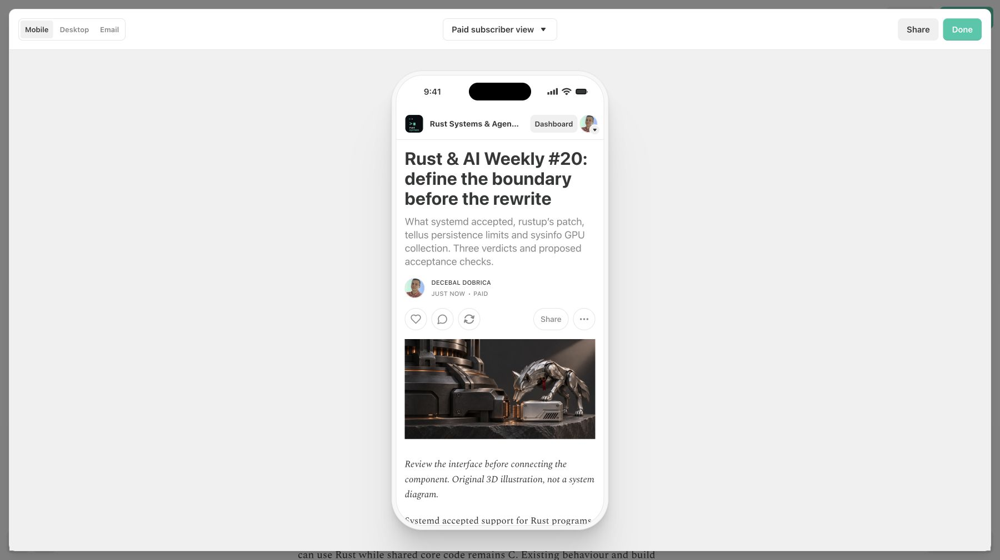
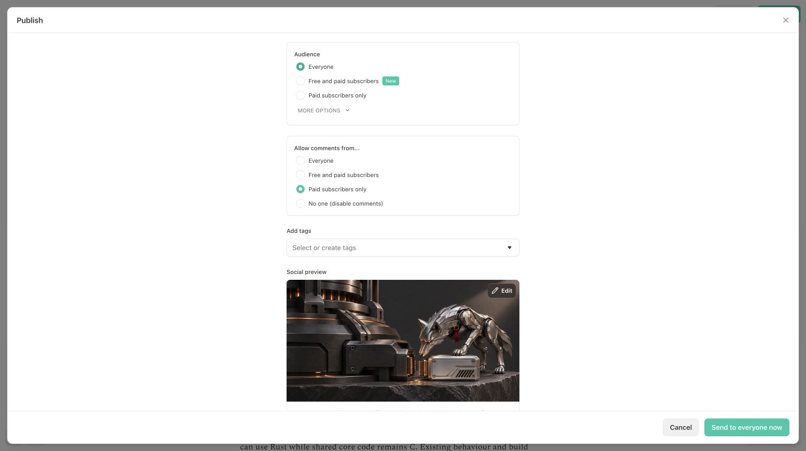

Issue 20 can be read in a saved newsletter draft with its original artwork
The complete edition, synchronized exports and social assets can now be reviewed together; publication is authorised with the blog first.
Main has issue 19; this content snapshot adds issue 20
Before: df9386c
Main contains issue 19. No issue 20 source or artwork exists there.
After content snapshot: a7d9e28
Issue 20 source, original 3D hero, matching social crop and 98-tool radar are present. Article SHA256: 685d2b26d044262db2a25f453e0888ebc56496789104e01b2ee8fa9f44927b2d. Later report and receipt edits do not change this article.
Native Substack previews include the edition and its two images


A reviewer can reopen the exact saved draft
- Open draft 224126934, then reload. Pass: Saved state, issue 20 title and full closing question remain.
- Open native Mobile and Email previews. Pass: both images load with descriptive alt text, full ending visible and 16 list items retained.
- Read saved-body verification and claim ledger. Pass: normalized source and saved text both 14,278 characters; source and release caveats preserved.
Paid preview mode differs from publication audience
Paid subscriber view was used to inspect the full draft. It did not select the delivery audience. Everyone was subsequently selected explicitly in the Publish dialog. Browser email previews do not demonstrate mailbox delivery; a fresh empty warning snapshot alone would not establish that a length warning cleared.
Native previews show paragraph spacing and image loading
Text checks alone cannot show the narrow reading layout or whether uploaded images load. The authenticated preview was inspected after reload and save settlement. Separate local site verification used the actual Next.js article route: HTTP 200, matching rendered text, both edition images loaded and no overflow at 390 pixels.
What I have not checked
At this snapshot the production blog is not yet deployed, the newsletter has not been sent, and neither social platform has been posted. No delivered-mailbox test, benchmark, proposed tool-acceptance check or transitive licence audit was executed. Publication receipts will distinguish these actions from preparation.